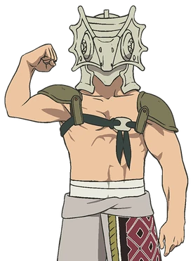

About Gugu
Gugu is a beloved character in To Your Eternity, known for his resilience, kindness, and unwavering loyalty. After a tragic accident leaves him disfigured, he begins wearing a mask and living with the brewer who saves him. Despite his hardships, Gugu remains optimistic and hardworking, quickly forming a deep bond with Fushi.
Role in Fushi’s Life
Gugu becomes one of Fushi’s first true friends and acts as an older brother figure. He teaches Fushi about protecting others, the value of hard work, and the meaning of sacrifice. Gugu's willingness to risk his life in battle against the Nokkers cements his legacy as one of the most selfless characters in the series.
Notable Moments
- Meeting Fushi and helping him adapt to life among humans.
- Training to become stronger in order to protect those he loves.
- Sacrificing himself to save Rean and others during the Nokker attack.
- Leaving a lasting emotional imprint on Fushi, becoming one of his treasured forms.
Appearance
Gugu wearing his signature mask.